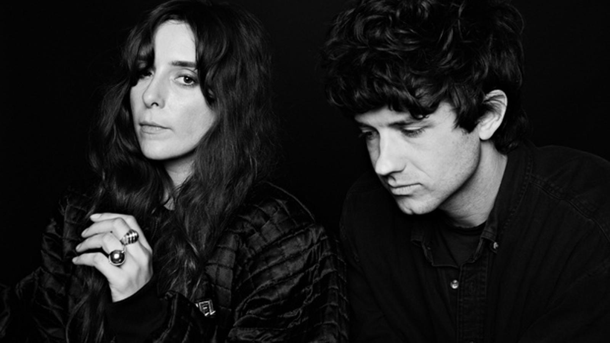
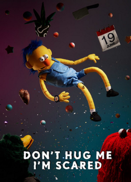
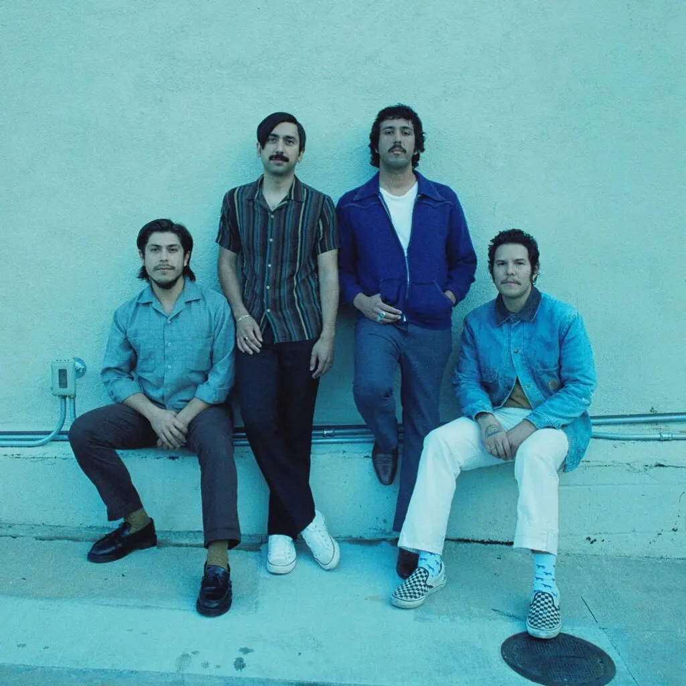
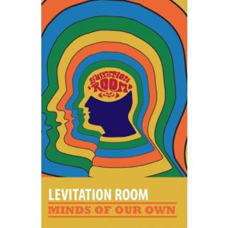

7. It Feels Like We Only Go Backwards
Ha eddig még nem volt egyértelmű, Kevin Parker szereti a hosszabb címeket, és szereti bennük lelőni a dalszöveget is.
Ez legpopposabb dal az albumon, ami nem véletlen, hisz egy Beach House szám, a „Walk In The Park” véletlen folytatása ként készült el, azonos tempóval és azonos hangnemben, még a dallama is hátborzongatóan hasonló. Kevin azt nyilatkozta, hogy amikor egyszer hallgatta azt a dalt, akkor miután véget ért, a fejében folytatódott tovább és így született meg a „Olyan érzés, mintha csak visszafele mennénk”. A dal egy híres dzsessz akkordmenetet használ fel megfordítva, ami egy aranyos utalás a számra és a címére.
Ez szám a második single az albumról, és videóklipje is van. A klipet a „Don't Hug Me I'm Scared” készítői csinálták, és a végeredmény egy igazán pszichedelikus gyurma animáció. Megjelenik a fej-a-fejben motívum, ami a gondolatokban való elvesződést szimbolizálja. Ez a szimbolum szerepelt később a Mind Mischief videóklipjében, majd a 'levitation room' nevű zenekar 2015-ös EP-jén, a Minds Of Our Own-on.
Tematikaikailag viszonylag közel áll a Mind Mischief-hez, ismét szerelmi bánatról van szó.

Részlet a videóklipből
A kórusban egy „baby”-t vagy „darling”-ot szólít fel, mindkettő aranyos becenév egy partnerre. A dalban nemsokára kiderül, hogy ez nem is partner, csak egy lány, akiért rajong. A dal személye úgy érzi, hogy csak „visszafele megy” a szerelmi életében, de mégis minden porcikája azt mondja, hogy „Előre!”.
Nem nehéz megfejteni, hogy ez alatt szimplán arra gondol, hogy tovább kellene lépnie, de a lány visszarántja. A következő sorban azt mondja, hogy felcsillant benne a remény, tehát a szerelme valami olyat tett, amitől megint azt hiszi, hogy próbálkoznia kellene. Ugyanebben a sorban azt mondja, hogy „oh ne, ne megint”, utalva arra, hogy már ő sem akarja folytatni ezt a sóvárgást a lány irányt, de az érzelmei mást mondanak. A kórus utolsó sorában megismétli, hogy csak visszafele megy, lényegében minden előrelepésénél kettőt visszalép.
Az első versszakban kifestődik a kép a valóságról- a lány csak kedvesen viselkedik vele, játszadozik vele, de ez csak mélyíti a narrátor vele való megszálltságat. Arról énekel, hogy a lány vicceskedve szólítja a dal énjének nevét, de ő egész nap ezt hallja, nem tudja kiverni a fejéből. Már csak annyiból is azt gondolja, hogy a lányt is érdekli ő, hogy szimplán kimondja a nevét. Ezután azt mondja, hogy abba a reménybe kapaszkodik, hogy a lány valós érzései nem mutatkoznak, ez alatt a játszadozás alatt lehet, hogy tényleges szeretet lapul, de persze legbelül a szám személye jól tudja, hogy ez egyáltalán nem így van.
Ezt újból egy kórus követi, majd rögtön utána jön a második versszak. Itt arról énekel, hogy a „határozatlanság magja” nem ő benne rejlik, hanem a lányban. A dal énje már rég eldöntötte: szereti a lányt. Viszont hiába próbálja elérni, hogy a lány is visszaszeresse, ezzel csak ellentétjét éri el, egyre távolabb tolja őt, döntésképtelenné teszi. Ezt be is látja a versszak második felében, „Így megy ez, ha el akarsz érni valami igazit.”
Ezt ismét egy kórus követi- sőt a szám végéig már csak a kórus megy. Persze a szintetizátorok változnak, és nem válik unalmassá. Kevin Parker a repetíció mestere, egyszerre ismétli ugyanazt de mozdítja ugyanakkor előre a számot és eközben a fülébe mászik az embernek, majd utána napokig ki nem lehet onnan szedni. A vége fele a háttérben az egyik orgona kicsit eltorzul, majd a legvégén azzal zárul, hogy minden abbamarad és csak a reverb és delay effektek maradnak, amik szépen lassan elhalványulnak.
A szintetizátorok kettő orgona hangból állnak, mindkettőn delay-el és szaturátorral. Több információt sajnos nem találtam, valószínűleg egy Juno szintetizátorral érte el a számon található hangokat, igazából semmi különleges, de működik.
A basszusgitár elég groovy és fülbemászó, szépen kiegészíti a számot. A dobolás nem túl intrikált, de illik a számhoz, mivel popposabb.